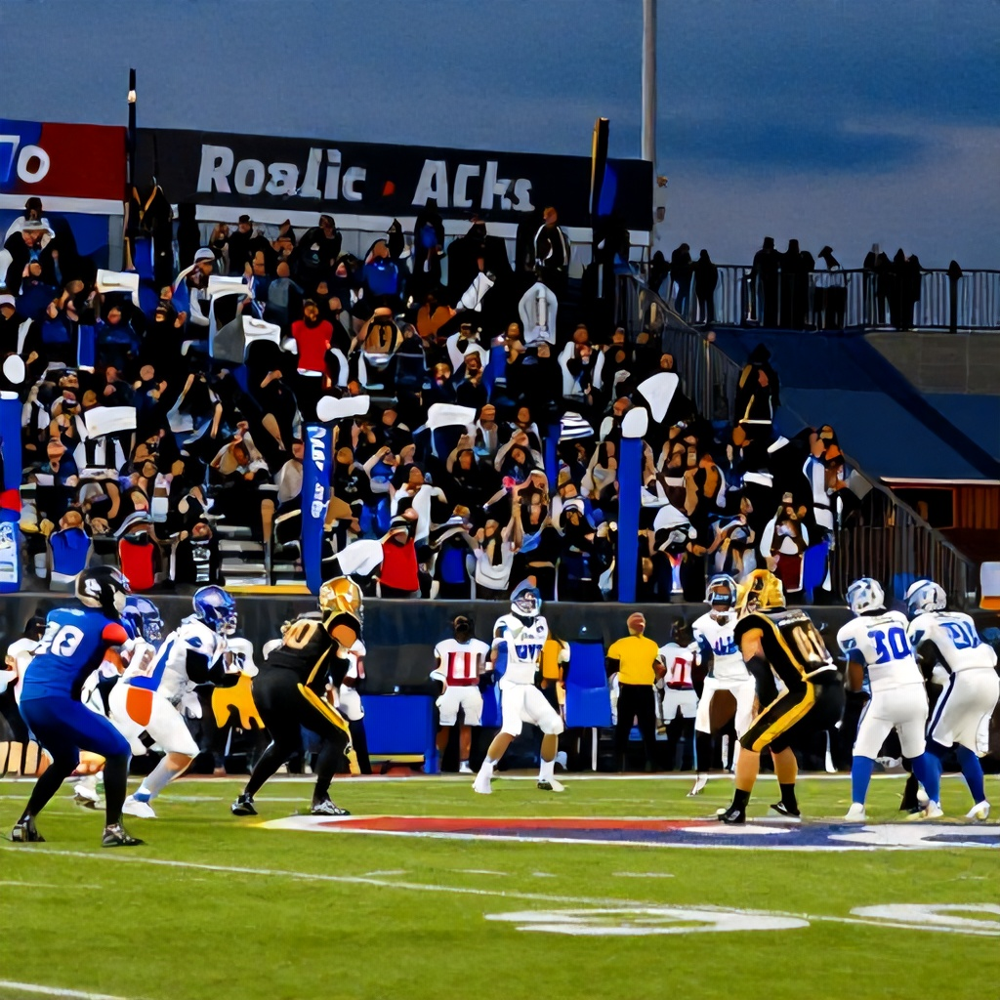

A Clash of Western Division Powerhouses
Friday evening's CFL action promises to deliver another thrilling matchup as the Saskatchewan Roughriders host the BC Lions at Mosaic Stadium on June 13, 2026. With both teams vying for supremacy in the Western Division, this contest represents a pivotal moment in their respective seasons.
Betting Takeaway: Saskatchewan Roughriders - Moneyline +110
According to Sports Select odds, the Roughriders are listed at +110 moneyline, while the BC Lions sit at +155. This suggests that while the Lions are considered the underdog, they're still a competitive team. However, the slight edge given to Saskatchewan reflects their home-field advantage and recent form.
The moneyline spread indicates that Saskatchewan is favored to win by 2 points according to Sports Select's spread line. With the Lions' defensive struggles and the Roughriders' strong home performance, this could be a crucial game for both teams' playoff positioning.
Western Division Context
As the Western Division continues to shape up, each game carries significant weight. The Roughriders have been showing resilience at home, and Mosaic Stadium has historically been a fortress for the team. Their ability to control tempo and limit turnovers will be critical against a Lions squad known for their explosive plays.
The Lions, despite being the visiting team, have shown flashes of brilliance throughout the season. Their offensive capabilities, particularly through the air, present a challenge that Saskatchewan must neutralize. However, the home crowd's energy and the team's defensive intensity could tip the scales in favor of the host side.
Key Factors to Watch
Home-field advantage at Mosaic Stadium cannot be understated. The Roughriders' familiarity with the venue and support from local fans often translates into strong performances. Additionally, the team's recent defensive improvements may prove decisive in limiting the Lions' scoring opportunities.
For the BC Lions, their ability to adapt quickly to different game situations will be essential. They'll need to maintain their aggressive offensive approach while avoiding costly mistakes that could cost them the game.
With a projected total of 52.5 points, this game should provide plenty of scoring opportunities for both teams. The weather conditions at kickoff will also play a role in determining how the game unfolds, especially if precipitation affects field conditions.
Conclusion
This matchup between the Saskatchewan Roughriders and BC Lions promises to be an exciting affair that showcases the best of Canadian football. While the Lions bring their trademark offensive flair, the home team's defensive prowess and crowd support make them a formidable opponent. For bettors looking for value, the moneyline on Saskatchewan at +110 offers solid potential returns with a reasonable chance of victory.